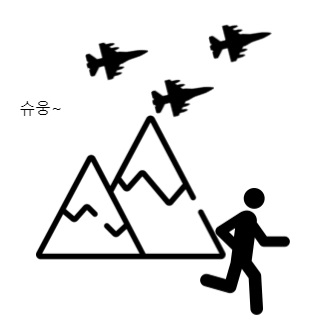
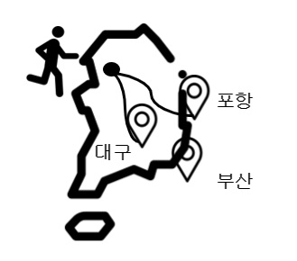

1950. 06. 25
//뭔가 전쟁을 눈치챈듯한 사진
전쟁이 시작되었음을 느낀, 김아무개 ,탈출하기 위하여
선택한 x,y를 들고 집을 나선다. 일차적으로
나이가 있기에, 젊은사람처럼 먼길을
한번에 이동할 수 없음을 느껴, 전략적으로 내려가야하나 고민한다.

//갈림길 표시 지도 서울->포항->부산 / 서울->대구->부산
김아무개는 생각한다. '포항쪽으로 가면 아무래도 부산까지 직선거리가
아니기 때문에 적군과 만날 가능성이 적을거야, 그러나 직진거리로 대구를
통해 간다면 적군이랑 마주칠 확률이 높을것 같다.'